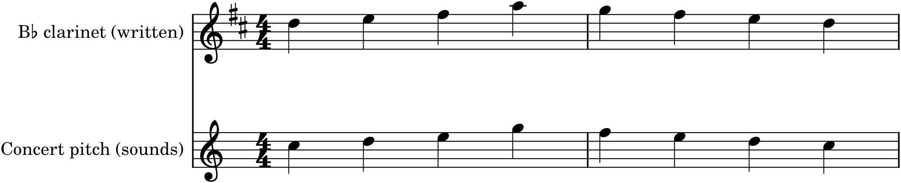

Here is the fact that confuses every beginning orchestrator, and the one this chapter exists to demystify: for some instruments, the note you write is not the note that sounds. Write a C for a clarinet, and the audience hears a B♭. Write a C for a French horn, and they hear an F. These are the transposing instruments, and the gap between what is written and what sounds is a genuine trap — until you understand why it exists and, better still, let MuseScore handle it for you, which it largely can.
32.1Concert pitch and written pitch
Two different pitches are in play for every note. Concert pitch (or sounding pitch) is the actual pitch you hear — the note as it exists in the air, the same for everyone. Written pitch is what appears on a particular player’s page. For most instruments the two are identical: a violin, flute, oboe, trombone, or piano plays exactly the note written, and these are called non-transposing (or concert-pitch) instruments. But for a transposing instrument, the written note and the sounding note differ by a fixed interval, always the same for that instrument. The clarinet, trumpet, and horn are the common ones.
32.2Why transposing instruments exist
This seems perverse until you learn the reason, which is a kindness to the player. Many instruments come in a family of different sizes and keys — clarinets in B♭, A, and E♭; trumpets in B♭ and C; horns historically in every key. If each size were written at concert pitch, a player switching between them would have to relearn the relationship between the notes on the page and the fingerings for each instrument. So instead, the music is written transposed so that the same written note always means the same fingering, whatever size the instrument. A clarinettist reading a written C fingers “C” and the instrument sounds whatever pitch that fingering produces on that particular clarinet. The transposition moves the difficulty from the player (who now has one fingering system for life) to the composer and score-reader — which, thanks to software, is a trade worth making.
32.3How the transposition works
An instrument is described as being “in” a key — a B♭ clarinet, a horn in F — and the rule is: the instrument sounds that key’s pitch when it reads a written C. A B♭ instrument reading C sounds a B♭, which is a major second below the written note; so to make it sound a given concert pitch, you write a major second higher. Here is a concert-pitch melody and the same music as a B♭ clarinettist reads it:

The two staves in Figure 32.1 sound the same — the clarinet part is written up a major second precisely so that it comes out at concert pitch. The common transposing instruments and their intervals:
| Instrument | Sounds relative to written | Write concert pitch… |
|---|---|---|
| Piccolo | an octave higher | an octave lower |
| Clarinet / Trumpet in B♭ | a major 2nd lower | a major 2nd higher |
| Clarinet in A | a minor 3rd lower | a minor 3rd higher |
| Horn / English horn in F | a perfect 5th lower | a perfect 5th higher |
| Alto saxophone (E♭) | a major 6th lower | a major 6th higher |
| Double bass, Contrabassoon | an octave lower | an octave higher |
The octave transposers — piccolo up, double bass and contrabassoon down — are the mildest case: they read normally, just an octave off, purely to avoid a forest of ledger lines. The others genuinely change the letter of the note.
32.4Key signatures follow the transposition
Because a transposing part is written at a transposed pitch, its key signature transposes too. A piece in concert C major will have the B♭ clarinet part written in D major — a major second up, two sharps — as the upper staff of Figure 32.1 shows. This is why, if you open a full orchestral score, you will see different instruments carrying different key signatures on the same page: each transposing instrument is notated in its own transposed key so its player’s fingers stay consistent. It looks alarming until you know the trick, and then it is simply information: a clarinet part two sharps sharper than the strings is a B♭ clarinet reading concert pitch correctly.
32.5How MuseScore handles it
Here is the good news that makes all of this manageable: MuseScore does the transposition for you. It knows every instrument’s transposition, and it has a single button — Concert Pitch — that toggles the entire score between two views. With Concert Pitch on, every part is shown at its true sounding pitch, so you can compose, check harmony, and read the score as concert pitch, thinking only about the notes you actually want to hear. With Concert Pitch off, MuseScore instantly rewrites every transposing part into its correct written, transposed form — right key signature and all — ready to print for the players. You write the music once, in concert pitch; MuseScore produces the correctly transposed parts automatically. The trap that has bedevilled orchestrators for centuries is, for you, a toggle.
32.6Why you still need to understand it
If MuseScore handles it, why learn it? Three reasons. You will read scores written by others, and you must understand why the clarinet appears to be in the wrong key. You must check ranges correctly — a note that looks comfortable on a transposing part may sound too high or too low, so range-checking (Chapter 33) has to account for the transposition, which is another reason to work in Concert Pitch view. And you will occasionally write directly onto a transposed part, and need to know what will actually sound. Understanding transposition turns MuseScore’s automation from magic you distrust into a tool you command.
In MuseScore
The whole subject reduces, in practice, to one button and a habit.
- Compose in Concert Pitch. Toggle the Concert Pitch button (in the toolbar, or View) on while you write, so every instrument shows its true sounding pitch. Now harmony, voice leading, and ranges are all in concert pitch — what you actually hear — and you never have to think about transposition while composing.
- Print the parts transposed. Turn Concert Pitch off and MuseScore rewrites each transposing instrument into its correct written key and pitch. Extract the parts (File ▸ Parts) and each player gets a correctly transposed part.
- Add a transposing instrument and MuseScore already knows its transposition — a “Clarinet in B♭”, a “Horn in F” — and applies it automatically; you need not calculate anything.
- Check ranges in Concert Pitch view, where the red out-of-range colouring reflects the true sounding pitch.
Try it: add a B♭ clarinet to a score and enter a C-major scale with Concert Pitch on — it looks like C major. Now toggle Concert Pitch off and watch the same scale jump up a major second into D major, two sharps, exactly as in Figure 32.1. You wrote the sound you wanted; MuseScore wrote the part the player needs. That toggle is the entire practical skill of transposition.